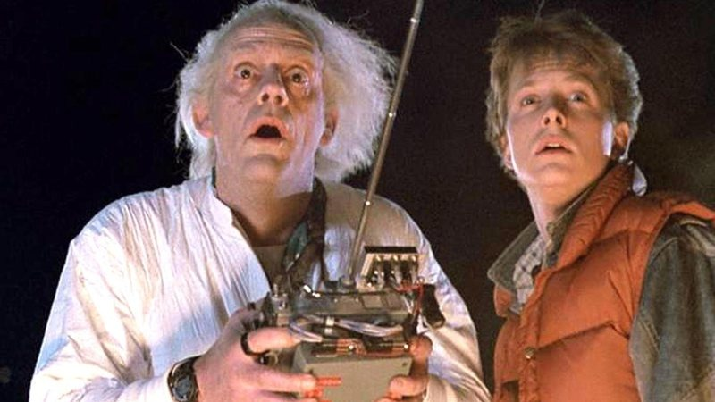
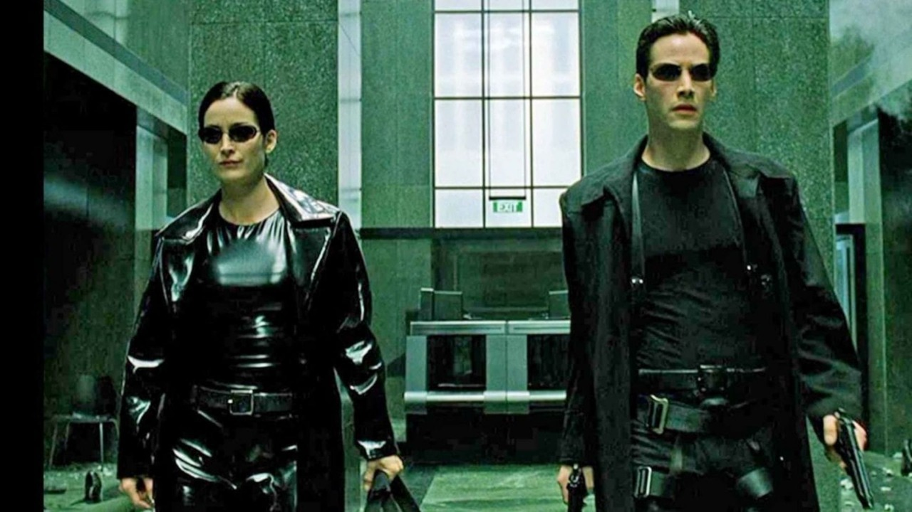
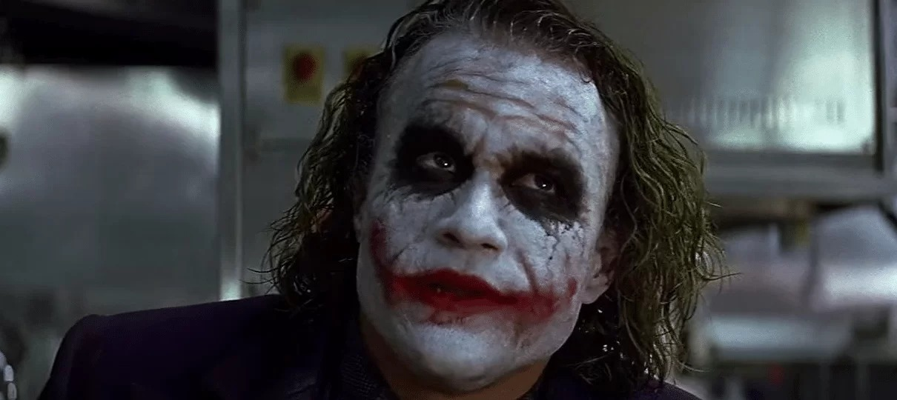

Classicos
De volta para o futuro
Vamos agora falar de um clássico para cada época, começando dos anos 80: De volta para o futuro foi um clássico absoluto do cinema. Contando a história de como Marty Mcfly e Emmett Brown viajaram no tempo e tem agora que lidar com as consequências dessa viagem. O filme é considerado revolucionário por apresentar efeitos especiais incomuns para a época, além de apresentar uma trama externamente divertida e detalhada (também é meu filme favorito). 10/10
Matrix
Um dos filmes mais importantes do cinema, Matrix apresenta uma trama fora do comum, te fazendo refletir sobre a vida ao seu redor e se ela é realmente real. Também apresenta efeitos especiais fora de série, além de colocar Keanu Reaves no jogo. Nota: 10/0101010101
Cavaleiro das trevas
Sem dúvidas o melhor filme do Batman e um dos melhores de super-heróis no geral, O Cavaleiro das Trevas apresenta uma trama coesa e surpreendente. Com a presença do personagem do Coringa(Interpretado magistralmente por Heath Ledger), a trama fica imprevisível e o filme ganhando força a cada segundo. Excelente filme! Nota: 10/hahahahahhahahaha